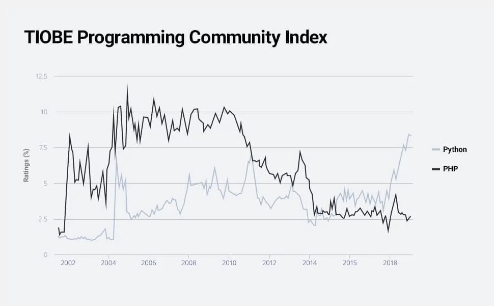

Python — самый быстрорастущий язык программирования за последние несколько лет. Python просто
понять и
изучить. Название языка произошло вовсе не от названия семейства пресмыкающихся. Автор назвал язык в честь
популярного британского комедийного телешоу 1970-х «Летающий цирк Монти Пайтона». Впрочем, всё равно
название языка чаще связывают именно со змеёй, нежели с передачей — пиктограммы файлов в KDE или в Microsoft
Windows и сам логотип языка изображает змеиные головы
Преимущества Python
- Python легко конкурирует с другими языками программирования, так как имеет множество достоинств.
Во-первых, это понятный и простой язык программирования. Особенно хорошо он для новичков. Можно создать
интересные приложения, и при этом не придется сидеть неделями, изучая сложный синтаксис.
- Динамическая типизация – это одно из главных достоинств языка Python. Для новичков это возможность
упростить написание кода и избежать множества фатальных ошибок и багов в работе. Также в Python нет
операторных скобок, с расставлением которых зачастую возникают сложности.
- С Python доступно огромное количество сервисов, сред разработки, и фреймворков. Легко можно найти
подходящий продукт для работы.
Возможность подключить библиотеки, написанные на С. Это позволяет повысить эффективность, улучшить
быстродействие.

Pис. 1 В рейтинге TIOBE можно проследить связь роста популярности Python и падения популярности PHP.
Недостатки языка Python
- Программы на Python считаются одними из самых медленных.
Приложения для iOS на Swift работают в 8,7 раз быстрее, чем на Python. Реализация PyPy по скорости
близка к Java, но в ней есть не все возможности оригинального языка. Python не подходит для задач,
требующих большого объёма памяти, — их лучше решать вставками на C или C++.
- Сильная зависимость языка от системных библиотек
Из-за этого затрудняется перенос на другие системы. Для этих целей существует инструмент Virtualenv, но
и он с недостатками: избыточность полных методов изоляции, костыли, дублирование системных библиотек.
- Global Interpreter Lock (GIL) не позволяет выполнять несколько потоков Python одновременно в реализации
CPython.
Однако GIL можно отключить на какое-то время, как это сделано в математическом пакете NumPy.